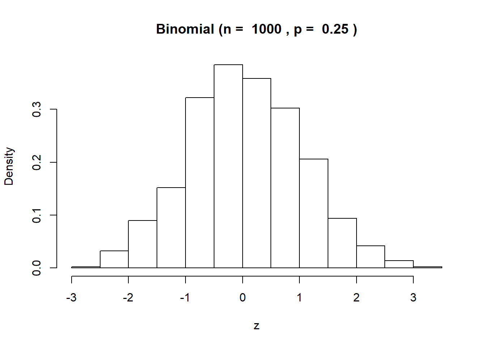
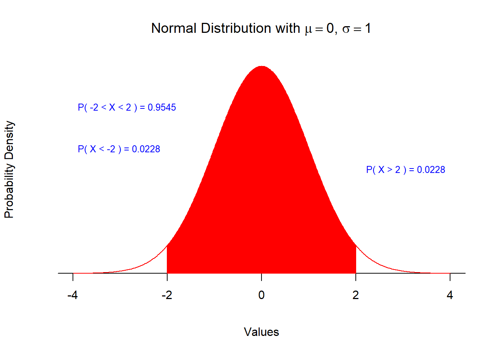

Chapter 12 Confidence Intervals
12.1 Imagine this…
Your team job is to handle the 579 current client billings in your team’s book of business. You only can contact 10 clients in the short time between now and when you must estimate the range of billings for a revenue forecast for your team’s managing director. Specifically,
What is the expected level of billings?
With a high degree of confidence, what is the range of billings we might expect?
What is a team member to do?
12.2 Objectives
With this unit, you will be able to:
Understand the reason for estimating with confidence interval
Calculate confidence intervals for population proportions
Interpret a confidence interval
Know the meaning of margin of error and its use
Compute sample sizes for different experimental setting
Know when and how to use t-score and interval to estimate the population mean
Compute sample sizes for estimating the population mean
12.3 Try this
What is a team member to do? Experiment! That’s what.
Suppose there are only 10 billings.
What if you take samples of 4 billings? There are \(_{10}C_4 = 210\) combinations of samples.
Enumerate them all. Calculate means for each sample.
Calculate the mean of the sample means.
Compare with the mean of the population of the five experimental billings.
Observations?
- Approximately symmetric
- Defined on + to - infinity
- Almost mesokurtic
- Mean of sample means is equal to the population mean
- Standard deviation of sample means is about half of the population standard deviation
Recommendations?
12.4 What about the sample standard deviation?
We supposed we had a experimental population of 10 billings.
We just pulled several samples of sample size 4 from this population.
We just found out that the mean of the sample means is the same as the population mean. This the same as saying that the point estimate of the mean of the sample means is unbiased.
The samples are all pulled from a population with population mean \(\mu = 138\) and has a population standard deviation of \(\sigma = 35.33\).
All of this means that each and every draw of each of the 4 sampled billings comes from a population distributed with a \(\mu = 138\) and a population standard deviation of \(\sigma = 35.33\).
12.5 Explore a bit further
Each and every draw of each of the 4 sampled billings comes from a population distributed with a \(\mu = 138\) and a population standard deviation of \(\sigma = 35.33\).
Each sample is a draw of 4 billings \(X = \{X_1, X_2, X_3, X_4\}\), where 1, 2, 3 and 4 are simply any four draws from the population. Each of the drawn Xs came from the experimental population of 10 billings.
The mean of the samples is then \[ \bar X = \frac{1}{4}(X_1+X_2+X_3+X_4) \]
The variance (square of the standard deviation) of the sample mean is then \[ \sigma_{\bar X}^2 = \left( \frac{1}{4} \right)^2 (\sigma_{X_1}^2 + \sigma_{X_2}^2 + \sigma_{X_3}^2 + \sigma_{X_4}^2) \]
The variance (square of the standard deviation) of the independently drawn (no intersection!) sum of the samples themselves is \[ \sigma_{(X_1+X_2+X_3+X_4)}^2 = \sigma_{X_1}^2 + \sigma_{X_2}^2 + \sigma_{X_3}^2 + \sigma_{X_4}^2 \]
But \(\sigma_{X_1}^2 + \sigma_{X_2}^2 + \sigma_{X_3}^2 + \sigma_{X_4}^2 = 4\sigma^2\), four times the square of the population standard deviation. So that, \[ \sigma_{\bar X}^2 = \left( \frac{1}{4} \right)^2 4\sigma^2 = \frac{\sigma^2}{4} \] and for any sample size \(n\), we have the standard deviation of the sampled means as \[ \sigma_{\bar X} = \frac{\sigma}{\sqrt{n}} \]
For our experiment all of this indicates that the distribution of the sample means is
` 1. Approximately normally distributed with 2. Mean = population mean \(\mu = 138\), and 3. Standard deviation \(\sigma_{\bar X} = \frac{35.33}{\sqrt{4}} = 17.70\)
12.6 Confidence interval ##1: known population standard deviation
Our first “forecasting” exercise is upon us. If we know the population standard deviation we use the Normal sample means distribution to help us think about “confidence.”
Out of all of the possible average billings,
What is a range of expected billings such that the MD would have 95% confidence in the results?
If the population standard deviation is known, then we can estimate expected billings such that \(\mu\) is somewhere between a lower bound \(\ell\) and an upper bound \(u\) \[ \ell \leq \mu \leq u \]
Our beliefs will be a probabilistic calculation of the lower and upper bounds.
Suppose our required confidence level is 95%. We have two tails which add up to the maximum probability of error, which we will call the \(\alpha\) significance level. In turn \(alpha\) equals one minus the confidence level, which is \(1- \alpha = 0.95\). For the two tail interval, calculate \(1 - confidence = \alpha = 1- 0.95 = 0.05\), so that \((1-\alpha) / 2\) for the amount of alpha in each tail.
For \(1- \alpha = 95\%\) there is \(\alpha / 2 = 0.05/2 = 0.025\) in each tail.
The upper tail for the \(\alpha\) confidence level begins at \(1 - 0.025 = 0.975\) cumulative probability or \(97.5\%\).
The lower tail for the \(\alpha\) confidence level ends at \(0.025\) cumulative probability or \(2.5\%\).


12.7 Our procedure
We will base lower and upper bounds using the \(z\) score. Start with the \(z\) score and solve for the population mean \(\mu\) and remembering that \(z\) can take on plus and minus values: \[ z = \frac{\bar X - \mu}{\sigma / \sqrt{n}} \] \[ \mu = \bar X \pm z \sigma / \sqrt{n} \]
If the population standard deviation \(\sigma\) is known then your belief about the size of the population mean \(\mu\) may be represented by the normal distribution of sample means. Suppose you desire a alpha 95% confidence about the size of the population mean. Remember that in our experiment the sample size \(n = 3\).Then calculate
\(\ell = \bar X - z_{0.025}\sigma / \sqrt{n}\), where \(z_{0.025} =\)
NORM.INV(0.025,0,1) = -1.96, so that \[ \bar{X} - z_{0.025}\sigma/\sqrt{n} = 138.13 + (-1.96)(35.33 / \sqrt{4}) = 138.13 - 34.6 = 104 \]\(u = \bar{X} + z_{0.975}\sigma/\sqrt{n}\), where \(z_{0.975} =\)
NORM.INV(0.975,0,1) = 1.96, so that
\[ \bar{X} + z_{0.975}\sigma/\sqrt{n} = 138.13 + (1.96)(35.33/ \sqrt{4}) = 138.13 + 34.6 = 173 \]
Thus we are 95% confident that the expected billings \(\mu\) lie in the interval: \[ 104 \leq \mu \leq 173 \]
12.8 On to the unknown
Let’s now suppose we do not know the population standard deviation. Now the sample standard deviation is also a random variable, like the sample mean. In practice this is nearly always the case. What do we do now?
Use the Student’s t distribution to correct for confidences that are, well, not so confident.
Here’s a plot of the Student’s t overlaid with the normal distribution.

What do you notice?
The normal (red) distribution is more pinched in than t (kurtosis? right!)
Student’s-t (blue) distribution has thicker tails than normal
Both are symmetrical
Let’s check tail thickness: in Excel we can use =T.INV(2.5%,3) which returns -4.30, and where the degrees of freedom \(df\) of our 4 sample billings is \(df = n - k = 4 - 1 = 3\).
Thus for the t distribution it takes 4.30 standard deviations below the mean to hit the 2.5% level of cumulative probability. It only took 1.96 standard deviations on the normal distribution.
There are 3 degrees of freedom because it only takes 3 out of the 4 sampled billings to get the third sampled billing (we do this by using 1 estimator, the mean we calculated).
That it took fewer standard deviations for the normal than for the t distribution to hit the 2.5% level of cumulative probability means that the t distribution is thicker tailed than the normal.

12.9 By the way, who is Student?
“Guiness is Good for You”
W. S. Gosset (1876-1937) was a modest, well-liked Englishman who was a brewer and agricultural statistician for the famous Guinness brewing company in Dublin.
Guiness insisted that its employees keep their work secret, so he published the distribution under the pseudonym “Student” in 1908.
This was one of the first results in modern small-sample statistics.
12.10 Our procedure
We will base lower and upper bounds using the \(t\) score. Start with the \(t\) score and solve for the population mean \(\mu\) and remembering that \(t\) can take on plus and minus values: \[ t = \frac{\bar X - \mu}{\hat s / \sqrt{n}} \] \[ \mu = \bar X \pm t \hat s / \sqrt{n} \]
If the population standard deviation \(\sigma\) is not known then your belief about the size of the population mean \(\mu\) may be represented by the Student’s t distribution of sample means. Suppose you desire a 95% confidence about the size of the population mean. This means you have a \((1 - 0.95)/2 = 0.025\) \(\alpha\) probability of error in mind. Remember that in our experiment the sample size \(n = 4\).Then calculate
Instead of the population standard deviation \(\sigma\), calculate the sample standard error \(s\). Suppose \(s = 37.23\). Given an 95% confidence level and 3 degrees of
\(\ell = \bar X - |t_{0.025}| \hat s / \sqrt{n}\),
where \(t_{0.025} =\) T.INV(0.025,3) = -3.18, and we take the absolute value of \(t_{0.025}\) since the \(\alpha\) significance rate 2.5% is symmetrically positioned on the t distribution in each tail. We then have
\[
\mu_{\ell} = 138.13 - (3.18)(35.33 / \sqrt{4}) = 82.11
\]
- \(u = \bar X + t_{0.975}\hat s / sqrt{n}\), where \(t_{0.975} =\)
T.INV(0.975,2) = 3.18, so that \[ \bar X + t_{0.975}\sigma / \sqrt{n} = \bar X + (3.18)(35.33/ \sqrt{4}) = 194.55 \]
Thus we are 95% confident that the expected billings \(\mu\) lie in the interval: \[ 82.11 \leq \mu \leq 194.55 \] Much wider an interval than if we knew the population standard deviation!
12.11 Exercises
- The Hiatus retail outlet takes a random sample of 25 customers from a segment population of 1,000 with a mean average transaction size of $80 normally distributed with a known population standard deviation of $20 per transaction. Find
The 90% confidence interval for transaction size, and
The 95% confidence interval for transaction size, and
The 99% confidence interval for transaction size.
What do these results indicate for management?
- A compensation analyst for an investment bank wants to estimate the mean hourly wages of several hundred employees in the first 5 pay bands plus or minus within plus or minus $20. Management wants a 99% confidence level for the analysis. Assume that the population standard deviation is known to be $40 and that hourly wages are normally distributed. Find the minimum sample size required for this analysis.
EXTRA:
Find the confidence intervals for 1 if the population is not known and the sample standard deviation is $23 per transaction.
Find the minimum sample size required for 2 if the population is not known and a sample standard deviation is $34.